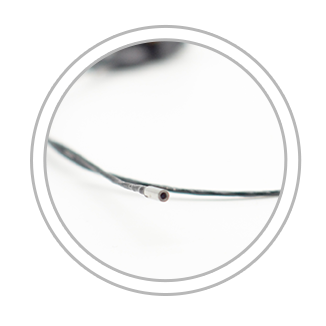
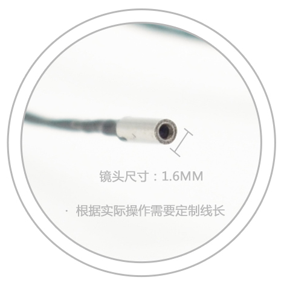
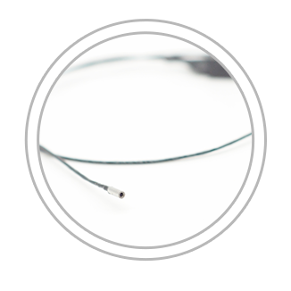
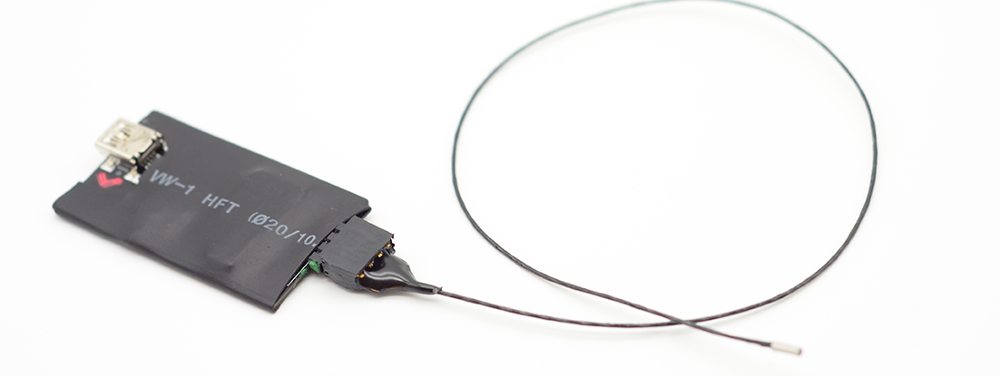
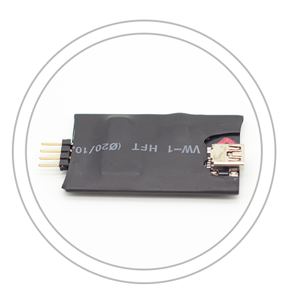
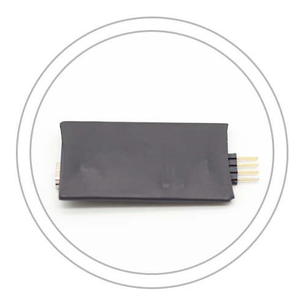
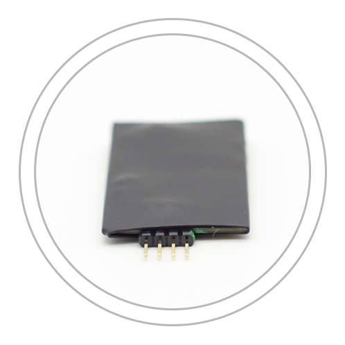
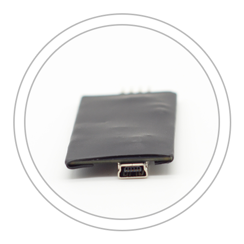

| 内窥镜手术在取代开放创口型手术时，将减少病人术后痛苦，提升复原速度。有效减轻病人负担，这正是微创型可是手术流行的原因 |
将先进的电子医疗技术用于健康
APPLY ADVANCED ELECTRONIC MEDICAL TECHNOLOGY TO HEALTH
超细电子内窥镜
SCIENCE AND TECHNOLOGY TO PROJECT THE HEALTH OF LIFE



16万像素 直径1.6MM不带光源 超细电子内窥镜
| 清晰的，超高分辨率的画面，可在外科手术中有效提升可视度 |
| 优秀的色彩还原提升精细组织识别度，可以协助外科医生识别边界和精细组织结构的细节，比如血管，神经，淋巴管和脂肪组织 |
| 大屏幕监视器和可放大的可视化设备助力外科手术过程，可以使得外科医生在一定距离以外使用那个内窥镜，可将多炒年糕切口处插入的手用器械的干扰降至最低。 |
传感部分

内窥镜头与传感器连接图

传感器正面

传感器反面

传感器和内窥镜接口细节

传感器接口细节